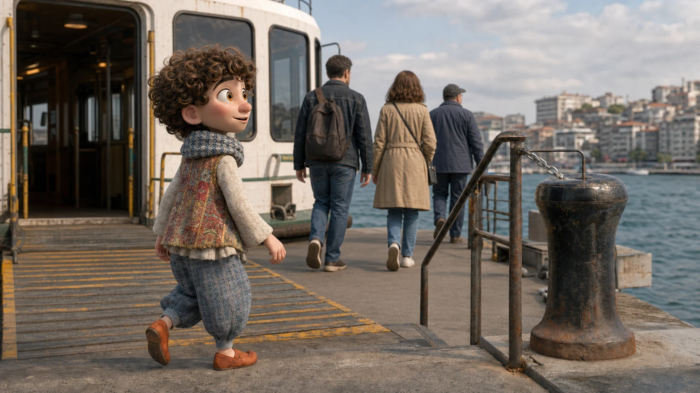
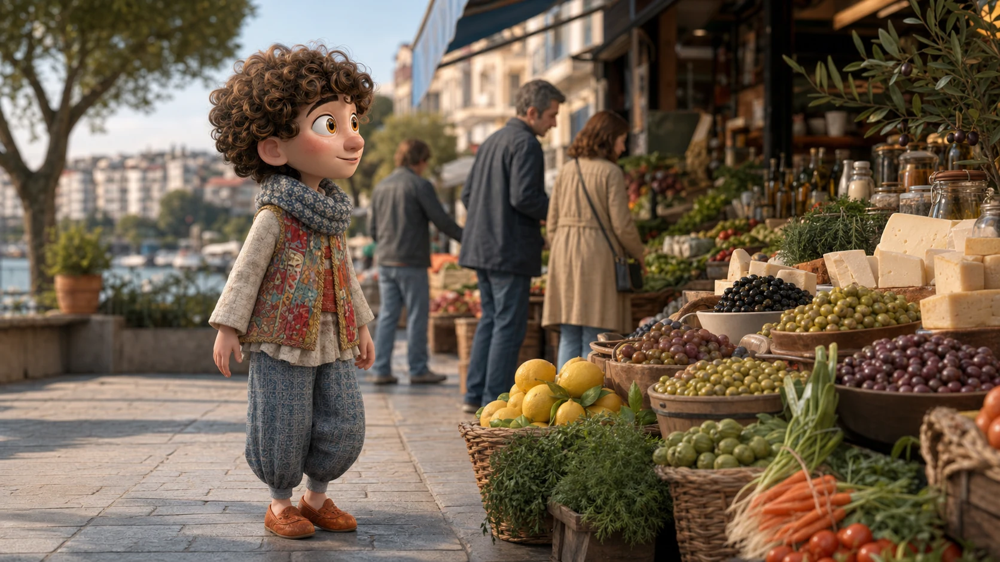
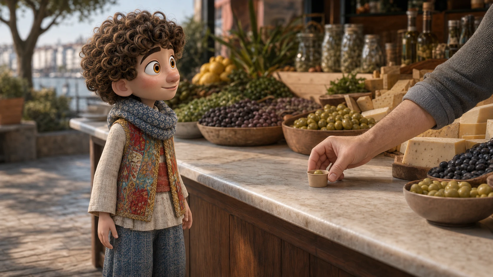

Megkóstolhatom?

Kadıköy · a túlparton
Itt nem kell látnivalót keresnünk.
A piac már tele van hangokkal. Választunk valamit, aztán lesétálunk Modába.
Most ne engem kövess. Menjünk arra, amerre mindenki más is.
Előbb csak figyelünk
A piac nem szavakat kér tőled.
Mielőtt bármit kérnénk, álljunk meg egy pillanatra. Mi az, amit először észreveszel?
Én is mindig mást veszek észre. Ma kezdjük azzal, amit te találtál meg.


Az első saját kérdésed
Egy kérdés, és már nem csak nézelődsz.
Az árus egy kis kóstolót készít. Ha szeretnéd megpróbálni, ez az egy mondat elég.
Törökül így hangzik
Tadına bakabilir miyim?
Megkóstolhatom?
Ali megvárja a döntésedet. Egyik válasszal sem maradsz le semmiről.
Mehetünk tovább a választáshozMost már te választasz
Mi kerüljön a kis papírzacskóba?
Nem kell ismerned az egész piac szókincsét. Mutass rá arra, amit szívesen magaddal vinnél.
Kiegészítő szókincsEzeket elég felismerned. A négy magmondatod ettől külön marad.
Ali kínál egy szünetet
Kérsz egy kávét, vagy menjünk tovább a vízhez?
Nem kell sietnünk. Mindkét út Modába visz.
Most már te hívod tovább Alit
A séta végén már te mondod, merre tovább.
A te meghívásod
Sahile gidelim mi?
Menjünk le a partra?
„Persze. Van időnk.”
Amit most már te mondasz
Már végig tudsz vinni egy rövid piaci beszélgetést.
Megkóstolsz valamit, választasz, megkérdezed az árát, aztán te hívod tovább Alit a partra.
Ebből kérek.
Mennyibe kerül ez?
Menjünk le a partra?
A négy mondatot egy mozdulattal elteheted Ali zsebébe.
Vissza Ali várostérképéhez